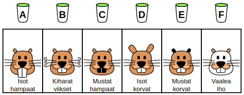
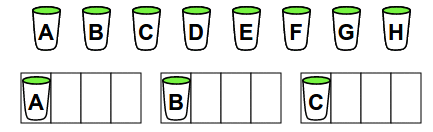
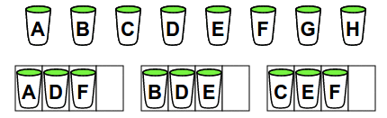
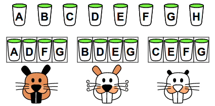
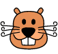
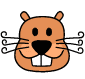

Ratkaisu
Tehtävässä pitää tutkia, mitkä juomat ja kasvojen muutokset esiintyvät keskenään samoissa kohdissa.
- Vain 1. ja 2. majava joivat juomaa B, ja vain heille tuli kiharat viikset: tämä on juoman B vaikutus.
- Vain 2. ja 3. majava joivat juomaa C, ja vain heille tuli isot korvat: tämä on juoman C vaikutus.
- Vain 1. majava joi juomaa A, ja vain hänelle tuli isot hampaat: tämä on juoman A vaikutus.
- Vain 3. majava joi juomaa D, ja vain hänelle tuli mustat hampaat: tämä on juoman D vaikutus.
- Vain 1. ja 2. majava joivat juomaa A, ja vain heille tuli isot hampaat: tämä on juoman A vaikutus.
- Vain 2. ja 3. majava joivat juomaa D, ja vain heille tuli isot korvat: tämä on juoman D vaikutus.
- Vain 1. ja 3. majava joivat juomaa C, ja vain heille tuli mustat hampaat: tämä on juoman C vaikutus.
- Vain 1. majava joi juomaa B, ja vain hänelle tuli kiharat viikset: tämä on juoman B vaikutus.
- Vain 2. majava joi juomaa E, ja vain hänelle tuli mustat korvat: tämä on juoman E vaikutus.
- Vain 3. majava joi juomaa F, ja vain hänelle tuli vaalea iho: tämä on juoman F vaikutus.

Toimitaan seuraavasti, jotta voimme yksikäsitteisesti yhdistää juomat kasvojen muutoksiin:
- Joitain juomia juo vain yksi majava.
- Joitain juomia juo vain kaksi majavaa.
- Yhtä juomaa juo vain kolme majavaa.
- Yhtä juomaa ei juo yksikään majava.
Aloitetaan jakamalla juomat A, B ja C kullekin eri kokeilijalle:

Jaetaan sitten juomat D, E ja F kullekin kolmelle mahdolliselle kahden kokeilijan yhdistelmälle: 1. ja 2. majava juovat juomaa D, 2. ja 3. majava juomaa E, ja 1. ja 3. majava juomaa F.

Lopuksi annetaan kaikille kokeilijoille juomaa G. Tämän jälkeen jäljelle jäänyttä juomaa H ei kokeilla lainkaan. Nyt voidaan antaa majavien juoda juomia.

Yllä on esitetty yksi mahdollinen tulos (juomien vaikutukset voivat vaihdella eri kerroilla, joten sinulle tulisi mahdollisesti erilainen tulos). Tuloksesta voi kuitenkin aina päätellä juomien vaikutukset. Esimerkkituloksen kohdalla se tapahtuisi seuraavasti:
- Kaikilla kolmella majavalla on isot hampaat: he kaikki joivat juomaa G.
- Vain 1. ja 2. majavalla on isot korvat: vain he joivat juomaa D.
- Vain 2. ja 3. majavalla on vaalea iho: vain he joivat juomaa E.
- Vain 1. ja 3. majavalla on mustat korvat: vain he joivat juomaa F.
- Vain 1. majavalla on mustat hampaat: vain hän joi juomaa A.
- Vain 2. majavalla on kiharat viikset: vain hän joi juomaa B.
- Vain 3. majavalla on valkoinen nenä: vain hän joi juomaa C.
- Yhdenkään majavan silmät eivät ole valkoiset: kukaan ei juonut juomaa H.
Alla on esitetty edellisten johtopäätösten mukainen ratkaisu:
Tämä on tietojenkäsittelyä!
Tehtävän taustalta voidaan löytää esimerkiksi tietojenkäsittelyssä yleisesti käytetty perustavanlaatuinen binäärilukujärjestelmä.
Vaikeimmassa versiossa piti jakaa juomat majaville niin, että voimme yksikäsitteisesti yhdistää juomat kasvojen muutoksiin. Juomien jakotapa voidaan esittää esimerkiksi seuraavanlaisena taulukkona, jossa tiettyä majavaa vastaan sarakkeen tiettyä juomaa vastaavalla rivillä on arvo 1, jos kyseinen majava joi kyseistä juomaa, ja muuten 0. Kunkin juoman vaikutus voidaan päätellä yksikäsitteisesti jos ja vain jos taulukon kaikki rivit ovat keskenään erilaisia (jos kahdella juomalla olisi samanlaiset rivit, ei juomien vaikutuksia voisi erottaa toisistaan).
Mikä tahansa sellainen taulukon täyttötapa, jossa kaikki rivit ovat erilaisia, mahdollistaa ratkaisun. Alla on yksi esimerkki (mikä poikkeaa esimerkkiratkaisun valinnoista).
|
1. majava |
2. majava |
3. majava |
| Juoma A |
0 |
0 |
0 |
| Juoma B |
0 |
0 |
1 |
| Juoma C |
0 |
1 |
0 |
| Juoma D |
0 |
1 |
1 |
| Juoma E |
1 |
0 |
0 |
| Juoma F |
1 |
0 |
1 |
| Juoma G |
1 |
1 |
0 |
| Juoma H |
1 |
1 |
1 |
Voimme tehdä huomion, että taulukon kaikki erilaisista riveistä koostuvat täyttötavat ovat pohjimmiltaan samantapaisia kuin yllä esitetty taulukko: taulukot eroavat vain sen suhteen, missä järjestyksessä numerorivit ovat. Tähän on selvä syy: taulukossa on kolme saraketta, ja niistä kuhunkin laitetaan joko 0 tai 1. On siis olemassa 2x2x2 = 8 erilaista riviä, ja toisaalta taulukossa on 8 riviä. Näin ollen jokainen rivi voidaan täyttää eri tavalla vain jos taulukkoon laitetaan kaikki 8 erilaista rivimahdollisuutta (jossain järjestyksessä).
Yllä esitetyn esimerkkitaulukon rivit vastaavat 10-kantajärjestelmän lukujen 0-7 esityksiä binäärilukuina: 000 = 0, 001 = 1, 010 = 2, 011 = 3, 100 = 4, 101 = 5, 110 = 6 ja 111 = 7.
Sellaisissa tietojenkäsittelyn ongelmissa, joiden ratkaisuun liittyy jonkin osajoukon (kuten tässä tiettyä juomaa maistavien majavien joukko) valinta, osajoukkoja kuvataan usein binäärilukuina. Esimerkiksi esimerkkitaulukon binääriluvut kuvaavat kaikki erilaiset 8 mahdollista tapaa valita jokin osajoukko kolmen alkion (tässä majavan) joukosta. Yleisemmin ottaen n-numeroisilla binääriluvuilla voidaan kuvata n-alkioisen joukon osajoukkoja.

 
